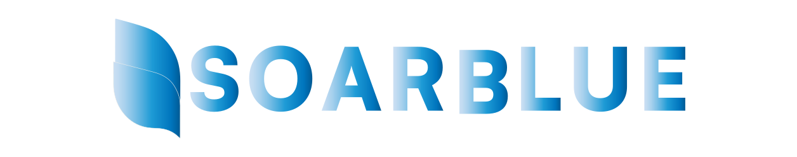
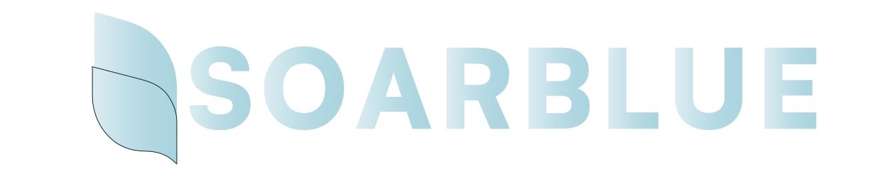
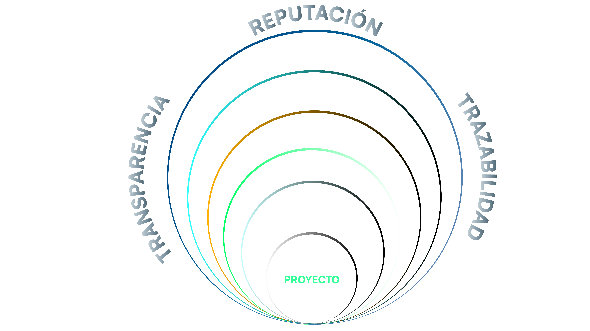

"Consultoría de vanguardia para el presente y futuro de su proyecto."
""Diseñamos soluciones personalizadas (Ex-Ante) en medioambiente, compliance, sostenibilidad y comunicación — respaldadas por un equipo profesional que hace trazable e integra cada decisión. (Ex-Post)"
Anticipa. Integra. Protege.
Nuestra Historia
Soarblue es una consultora especializada en la gestión integral de proyectos de inversión con dimensión ambiental, legal, sostenible y reputacional.
Diseñamos soluciones personalizadas según el contexto presente y futuro de cada proyecto, activando las capacidades que cada situación requiere.
Somos un equipo de profesionales con años de experiencia en terreno — biólogos, abogados, especialistas en sostenibilidad, comunicadores y expertos en tecnologías 4.0 — que trabajamos de forma articulada bajo dos metodologías propias: el Modelo Dermis y el Modelo Resonate.
Ambas arquitecturas organizan cada proyecto en capas de gestión que se protegen mutuamente y se adaptan al momento específico que su proyecto requiere.
Nuestro Equipo
Profesionales multidisciplinarios con experiencia en los sectores público y privado

Felipe Zapata

Alberto Guajardo

Macarena Vassallo C.
Alejandra Canelas

Andrés Flores Gallegos
Arturo Linares
Jerman Espindola
Rodrigo Tobar O

Nuestros Servicios
Soluciones integrales para la gestión ambiental empresarial
Evaluación Ambiental
Desarrollamos soluciones técnicas para procesos de evaluación ambiental, análisis de admisibilidad, preparación de antecedentes, gestión de observaciones y soporte especializado para proyectos sometidos a exigencias regulatorias y territoriales complejas.
- Admisibilidad
- Antecedentes técnicos
- Gestión de observaciones
- Soporte regulatorio
- Territorialidad
Cumplimiento Ambiental y Regulatorio
Apoyamos la gestión de permisos, obligaciones, compromisos ambientales y reportabilidad, fortaleciendo el control interno, la trazabilidad documental y la capacidad de respuesta frente a fiscalización y exigencias sectoriales.
- Permisos ambientales
- Control interno
- Trazabilidad documental
- Respuesta a fiscalización
Compliance Ambiental
Diseñamos e implementamos estrategias de compliance ambiental orientadas a prevenir riesgos regulatorios, penales, reputacionales y territoriales, articulando gobernanza, control interno, trazabilidad, entrenamiento y mejora continua.
- Prevención de riesgos
- Gobernanza ambiental
- Entrenamiento
- Mejora continua
Delitos contra el Medioambiente
Acompañamos a empresas y proyectos en la identificación temprana de riesgos asociados a la Ley 21.595 y otros marcos aplicables, revisando brechas, obligaciones, evidencia crítica, exposición penal y medidas preventivas para fortalecer una gestión ambiental diligente y responsable.
- Ley 21.595
- Identificación de brechas
- Evidencia crítica
- Medidas preventivas
Comunicación Corporativa y Ciudadana
Diseñamos estrategias de comunicación corporativa y ciudadana para proyectos y organizaciones expuestas a desafíos ambientales, integrando acceso a información, narrativa técnica comprensible, participación temprana, gestión de crisis y relacionamiento con comunidades, autoridades y otros actores relevantes.
- Participación ciudadana
- Gestión de crisis
- Relacionamiento comunitario
- Narrativa técnica
Resonancia Reputacional
Gestionamos la resonancia reputacional de proyectos y organizaciones expuestas a riesgos socioambientales, integrando análisis de actores, narrativa estratégica, alertas tempranas y apoyo comunicacional para fortalecer legitimidad, confianza y continuidad operacional.
- Análisis de actores
- Narrativa estratégica
- Alertas tempranas
- Confianza y legitimidad
Tecnología Aplicada
Integramos herramientas de analítica, automatización, trazabilidad, monitoreo y visualización para fortalecer la gestión ambiental, el seguimiento de compromisos, la reportabilidad y la toma de decisiones en terreno y gabinete.
- Analítica ambiental
- Automatización
- Monitoreo y trazabilidad
- Toma de decisiones
Comunicación Corporativa y Ciudadana
Estrategias integrales para el diálogo, la transparencia y la gestión reputacional en entornos socioambientales complejos
Participación Ciudadana y Relacionamiento Territorial
Diseñamos e implementamos procesos participativos efectivos que integran a comunidades, organizaciones locales y actores territoriales, construyendo confianza y acuerdos sostenibles para proyectos con impacto ambiental.
Interlocución con Actores Clave
Facilitamos el diálogo estratégico entre empresas, autoridades, comunidades y otros actores relevantes, gestionando relaciones que reducen conflictos y alinean expectativas para una convivencia territorial armónica.
Comunicación de Crisis y Controversias Socioambientales
Desarrollamos estrategias ágiles de comunicación para momentos críticos, con mensajes clave, protocolos de actuación y gestión de medios que protegen la reputación y la continuidad operacional.
Plataformas Digitales Informativas para Proyectos
Creamos plataformas digitales accesibles e interactivas que centralizan información técnica, legal y comunitaria, promoviendo transparencia, trazabilidad y participación informada de todos los actores.
Divulgación Ambiental en Lenguaje Claro
Traducimos conceptos técnicos y normativos complejos a un lenguaje claro y cercano, generando materiales educativos y divulgativos que empoderan a comunidades y facilitan la toma de decisiones informada.
Presentaciones Estratégicas para Directorios e Instituciones
Elaboramos presentaciones ejecutivas de alto impacto para directorios, entidades públicas, procesos de licitación y cuentas públicas, con narrativa clara, datos relevantes y diseño profesional.